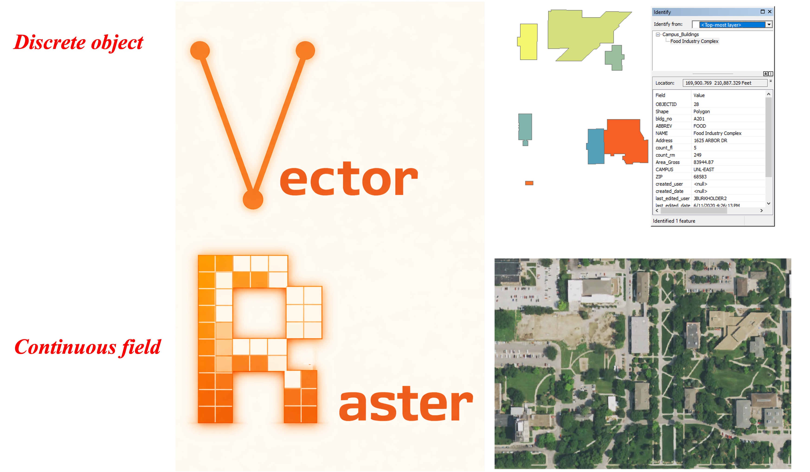
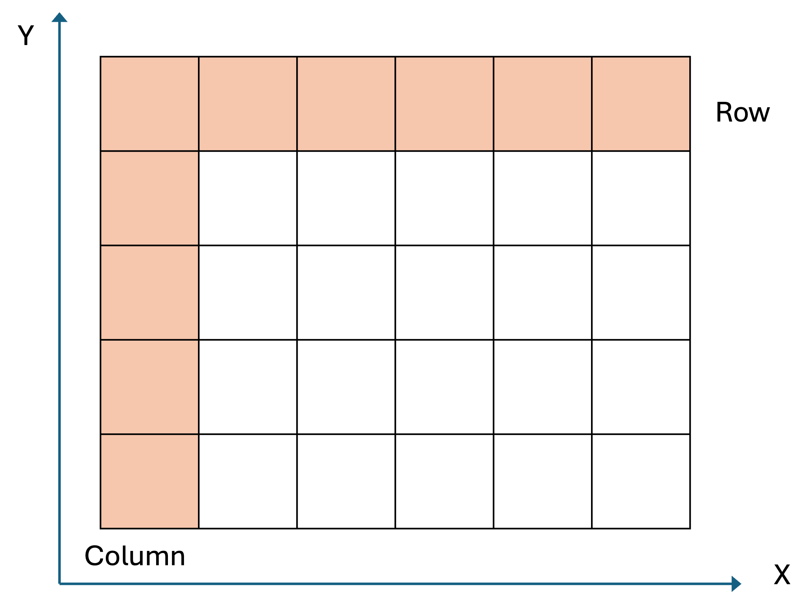
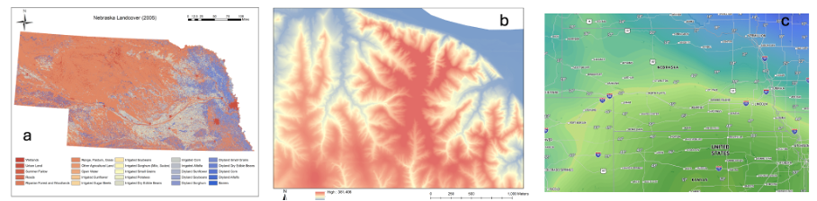
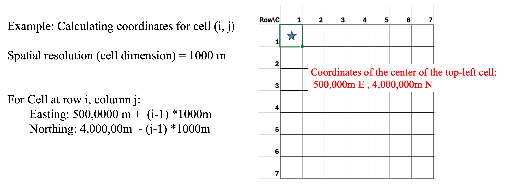
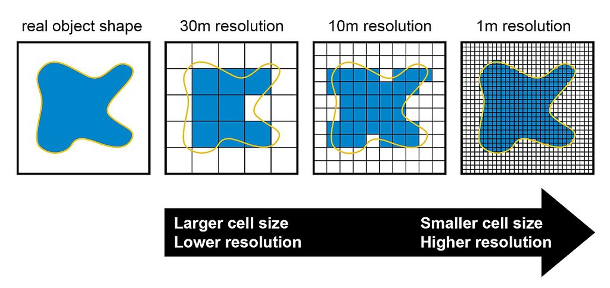
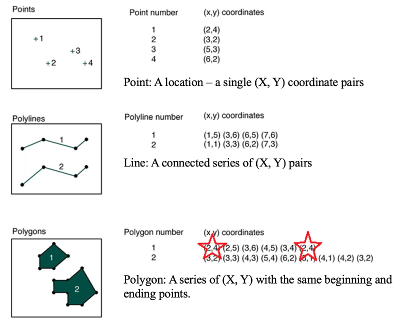
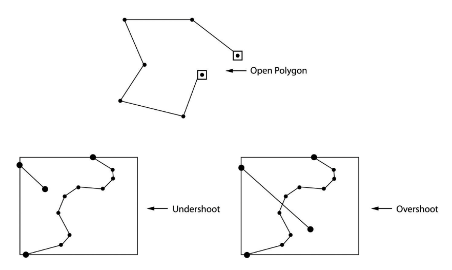

3 Geospatial Data Models
Raster thinks in pixels, vector thinks in points. - Anonymous
Understand how geospatial data is stored in digital format
Describe the pros and cons of different data models (vector vs. raster)
Select the proper data model for specific applications
3.1 Geospatial data and spatial data model
In modern society, data has become the driving force behind decision-making and innovation across nearly every sector. To effectively organize and interpret data, we employ a data model that is a conceptual framework that defines how data is represented, organized, and manipulated within a system. It dictates how information is stored, accessed, and related to other data. Essentially, data models are used to represent the reality, capturing key information about the real world, in a digital computer system.
In the context of spatial science, geospatial data (aka spatial data) describe entities along with their locations on the Earth’s surface. By including the location information, spatial data not only tells what happens but also where it happens. In another word, spatial data allows us to describe and analyze patterns, relationships, and trends across space. Geospatial data model is the abstraction of real world regarding geospatial data. They define how to use geospatial data to represent the real world in a digital computer system. There are two types of geospatial data models: raster and vector Figure 3.1. These two data models represent different views of the natural world: the discrete object view (vector) and the continuous field view (raster). Note that although raster and vector data models are used to represent geospatial data, they are not limited to storing spatial data. For example, graphic formats are either raster (jpeg, bitmap) or vector (pdf, eps).

3.2 Raster data model – the continuous field view
Raster data model adopts the continuous field view. It uses a matrix of equally spaced (often square) cells (aka pixels) organized into rows and columns Figure 3.2. In a raster, the spatial information is stored as the location of each cell in the grid, while the phenomena or entities of interest are represented by values associated with each cell location.

In raster data model, cell or pixel values represent the phenomenon portrayed by the dataset. The value for each cell can be a single number, or a list of numbers to represent different dimensions for the phenomenon at the particular location Figure 3.3. Cell values can be both discrete data (aka thematic or categorical data) representing discrete phenomenon, such as landcover land use types, or continuous data representing phenomenon that progressively vary as they move across a surface, such as temperature, elevation, pollutant concentration, and population density. It is worth noting that for each cell, the associated value is considered to apply to the entire cell, ignoring within-cell variation. This may also create abrupt changes from pixel to pixel.

3.2.1 Spatial resolution
In raster data, cell dimension defines the edge length for each square cell. The size of the cell is also called the spatial resolution of the rater data. When the cells are square and aligned with the coordinate axes, the calculation of a cell location is a simple process of counting and multiplication Figure 3.4. A cell location may be calculated from the cell size, known corner coordinates, and cell row and column number.

The spatial resolution of raster data (pixel size) reflects the level of detail represented by a raster Figure 3.5 Figure 17.6. A raster dataset with a smaller cell size would have higher spatial resolution, thus higher spatial accuracy. However, a smaller cell size will also lead to larger file size and slower display and processing, especially for large areas. In practice, choosing the proper spatial resolution is critical and should be based on the needs of the specific application. Generally speaking, the cell must be small enough to capture the required detail, yet large enough so computer storage is manageable, and analysis can be performed efficiently. One thing to consider is that a raster dataset can always be resampled to have a larger cell size (lower spatial resolution); however, you will not obtain any greater detail by resampling your raster to have a smaller cell size. Thus, depending on your future plans for your data, it may be worthwhile to obtain and store a copy of your data at its smallest and most accurate cell size (to the extent you can manage with your resources). You can always resample it to a larger cell size to meet your project needs.


Displaying large raster datasets can be slow, especially when zooming out, because the software must load the entire high-resolution dataset from disk. To improve performance, raster pyramids are used. These are precomputed, downsampled versions of the original raster at multiple levels of resolution, allowing GIS software to dynamically load only the appropriate level of detail based on the current map scale. This significantly reduces load times and enhances user interaction in map navigation. Note that building pyramids results in a small increase in the data size, because it adds the precomputed resampled versions of the raster to the data.
In summary, raster data model uses continuous cells arranged into a matrix to represent the world. Using the matrix allows raster to uniformly store points, lines, polygons, and surfaces and to efficiently perform specific spatial analysis methods, such as overlay, surface analysis and statistical analysis. However, there can be spatial inaccuracies due to the limits imposed by the cell dimension and the nature of regularly spaced cell. Meanwhile, the volume of raster dataset can potentially be very large, especially when the data covers a large area or has high spatial resolution (small pixels). Overall, the world is not made of pixels, but sometimes pixels are the best way to understand and represent it.
3.3 Vector data model – the discrete object view
Unlike the raster data model, vector data model utilizes the discrete object view to represent the world by treating each item as an individual object Figure 3.7. To do this, it uses three types of objects, including points, lines and polygons. Specifically, points are zero-dimensional geographical objects, meaning that points only represent locations in space without any length, width or area. Lines are one-dimensional geographical objects formed by connecting points, representing features with length but no width. Polygons are two-dimensional geographical objects that represent areas enclosed by a set of connected lines. Polygons can also be treated as a closed chain of points where the starting and ending points coincide, defining a boundary that encloses space.

Vector data model uses an attribute table to store non-spatial information about objects. In an attribute table, each row represents a feature (i.e., an individual object) while each column represents one attribute associated with all the features. This attribute table provides additional information about the features that can be used for data query, analysis and visualization.
Features of points, lines and polygons need to be stored separately in different layers (files), meaning that each layer can only store one type of feature but not two or more types simultaneously. All the features in one layer will share the same attributes or fields in an attribute table, and coordinate system (see details in Chapter 3).
3.3.1 Limitations of vector data as a representation of real world
While vector is widely used in GIS for representing discrete features using points, lines, and polygons, vector remains an imperfect abstraction of the complex and continuous nature of the real world. One major limitation is the simplification of reality: real-world features often have irregular, nuanced shapes and behaviors that are reduced to mathematically idealized geometries. For instance, boundary generalization occurs when complex natural boundaries—like winding coastlines or forest edges—are simplified into straight or smoothed lines to reduce data complexity. Additionally, vector data assumes clearly defined boundaries, which do not always exist in nature. Transitional zones, such as the gradual shift from wetland to upland, cannot be easily captured using discrete polygon boundaries. Another issue is polygon inclusions, where smaller areas of different land cover types (e.g., a pond within a forest) may be omitted or improperly represented if not explicitly digitized as separate features. These limitations underscore the need to interpret vector data critically and, where appropriate, complement it with other data models for more accurate spatial analysis.
One important property of vector data model is the ability to describe topology. Topology is a mathematics field that studies properties of spaces that are invariant under any continuous deformation. In geospatial science, topology studies the spatial relationship between adjacent or neighboring features, describing how features share geometry. In GIS, topology is used to (1) constrain how features share geometry. For example, adjacent polygons such as parcels have shared edges, street centerlines and census blocks share geometry, and adjacent soil polygons share edges. (2) Define and enforce data integrity rules: no gaps should exist between polygons, or there should be no overlapping features, and so on Figure 3.8. (3) Support topological relationship queries and navigation, such as to identify feature adjacency and connectivity.

In summary, vector data model is a compact data structure using points, lines and polygons to represent the real world. It can encode topology in an efficient manner and represent shape in a relatively precise way, so data can be represented at original resolution and form (no blurring with zooming in). However, compared to raster data model, vector data model utilizes a more complex data structure that location of each vertex and attributes of each feature need to be stored explicitly, and certain spatial analysis operations (e.g., overlay) are more difficult to conduct on vector data. Also, it may be less efficient to represent continuous phenomenon on a surface, such as elevation variation or temperature or pollution distribution. Note that people can and do use vector to represent continuous data, such as contour lines (it may just be less convenient and efficient than raster data model in many cases).
3.4 Combining and complementing Raster and Vector
Raster and vector are two data models that can be used to abstract the real world in geospatial sciences. They utilize different perspectives (continuous field view vs. discrete object view) for abstraction. The same phenomenon can be represented and stored using either raster or vector, depending on the purpose of the project or specific application. In practice, it is common that both raster and vector data models are used in one project representing different types of data. For instance, in a smart city application, information such as land use/land cover type and elevation can be stored using raster data model while data such as road network, ownership and tax parcel framework can be managed using vector data model. Meanwhile, data can be converted between raster and vector when needed.
Tip 1 Organize spatial data (e.g., in ArcGIS)
Use organized folder
Be aware of where you are saving your files – the default location is NOT a good place.
Always mange geospatial datasets like geodatabase and shapefiles in GIS software, e.g., ArcCatalog or ArcGIS pro Catalog tool. Do not use Windows explorer to manipulate the files.
Name files with descriptive names.
Tip 2 Name your file
Although Windows permits spaces in file and folder names, in GIS they are a BAD IDEA. They often work, but sometimes a certain program or function will fail if it encounters a space in a folder name. – Avoid spaces anywhere in folder/file names even when they’re allowed!
Use letters, numbers, or underscore only (no dash)
Always start the name with letters